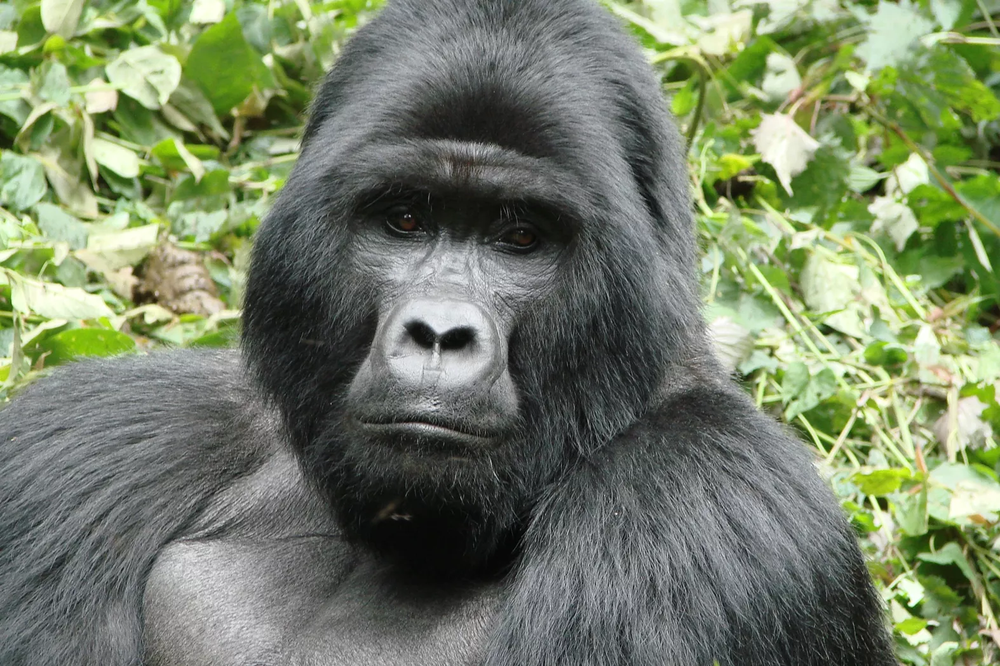
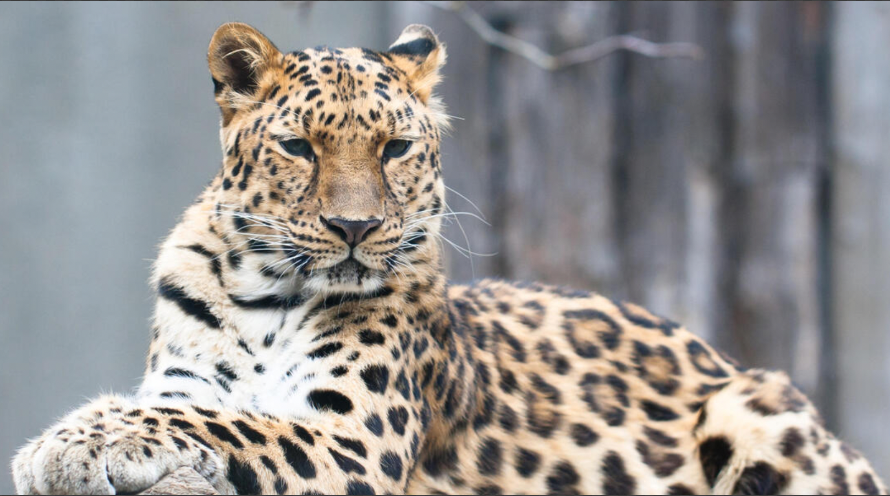
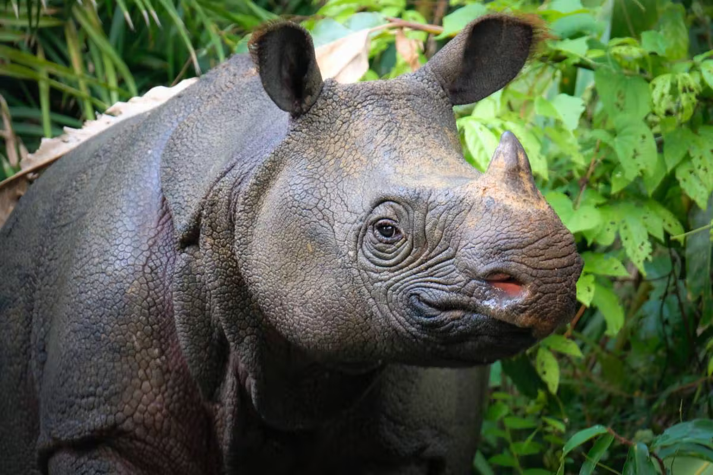
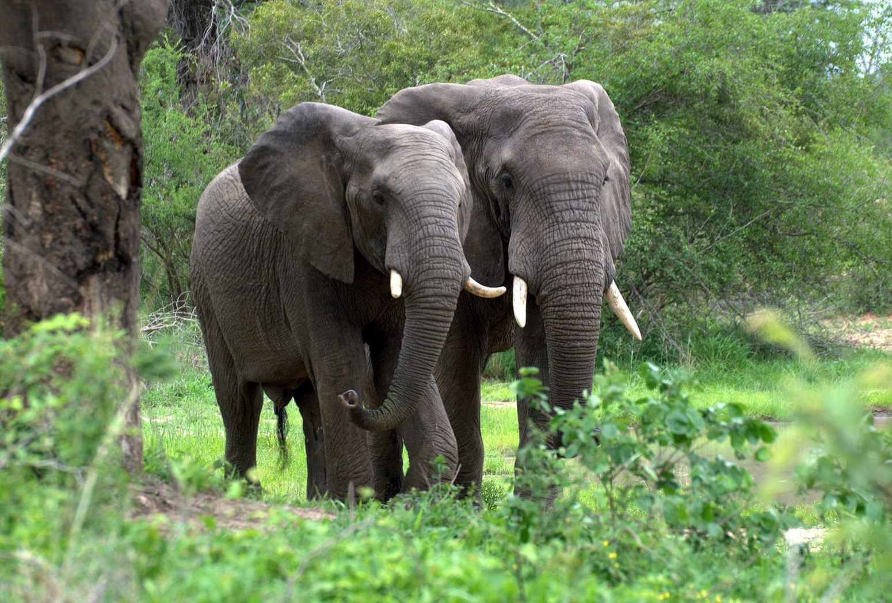

Meet the Species
There are over 7000 species that are considered endangered. Though we can't fit them all, here's a few we've decided to let shine in the spotlight.
Mountain Gorilla
Mountain gorillas are one of the largest living primates. Closely related to humans, they have long hair and short arms, broad shoulders and a massive chest. Sadly, only about 1000 of them remain in the wild. They have been declared endangered as of 2018 by the IUCN.
For decades, Mountain gorillas have been subjected to habitat loss due to forest degradation, hunting, and human conflict. As people move closer to the endangered apes, they bring the risk of human diseases that could transmit and create a serious threat to its habitat.
Amur Leopard
Out of all leopards, the amur leopard is the most critically endangered, only having 84 individuals to its name. They live in the Russian Far East, making their home in temperate forests. This leopard is a solitary cat that can run at speeds up to 37 miles per hour. It can even leap more than 19 feet horizontally and up to 10 feet vertically.
Amur leopards are tethering on the brink of extinction. They are poached for their distinct spotted fur. The proximity of Russian villages to the forests make it easily accessible for the leopards to be poached. Additionally, their prey population is scarce due to also being hunted by the locals for food and cash, making it difficult for the leopards to survive.
Javan Rhinoceros
Only 60 Javan Rhinoceros remain today, making them the most threatened out of the five rhino species. They once lived throughout India and southeast asia. The last Javan rhino in Vietnam was poached in 2010. This rhino has a dusky gray coloring and one horn that measures up to 10 inches. It is similar in appearance to the greater one-horned rhinoceros, but with a smaller head and less skin folds.
If we lose the population in Java, this entire species of rhinoceros will disappear. They are extremely vulnerable to extinction due to habitat loss, poaching, diseases, and catastrophes. The Ujung Kulon National Park is at risk to tsunamis, which can easily wipe out most of the life in the protected area. Additionally, people living near the park are encroaching and degrading the crucial habitat for the rhino. Poaching also remains to be an enormous threat.
Vaquita

The Vaquita, literally “little cow”, is a small harbor porpoise that can be found on the northern end of the Gulf of California, Mexico. It is the smallest known cetacean – whales, dolphins, or porpoises – reaching heights of only 4 to 5 feet. They have a dark ring around their eyes, and dark patches on their lips that form a thin line reaching from their mouth to their fins.
They are also the most endangered cetacean, with only 10 remaining. Vaquita are often caught and drowned in gillnets used by illegal fishing operations. They will be extinct if a gillnet ban to end fishery bycatch is not enforced through their entire habitat.
African Forest Elephant
African forest elephants inhabit the dense rainforests of west and central Africa. They live in groups of 20 and forage on grasses, fruits, and seeds, making them the ‘mega-gardener of the forest’. These elephants are smaller than other African elephant species. Their tusks are straighter and point downward, and their ears are oval shaped. Forest elephants also have lower reproductive rates than other elephants, meaning they cannot bounce back as quickly from population declines.
African forest elephants are critically endangered and poaching for ivory and bushmeat is the most immediate threat. Thousands of elephants are illegally killed each year to meet the demand for ivory. These elephants also suffer from habitat loss as humans convert land for agriculture, settlements, and developments. Since people and elephants are increasingly coming into contact with each other, it leads to conflicts that the elephants habitually lose.